조경기사 (2007-09-02 기출문제)
1과목: 조경사
1. 르네상스 시대의 프랑스 특유의 조경 양식은?
- 운하식
- 고산수식
- 노단 건축식
- 평면 기하학식
(정답률: 92%)

2. 다음 중 무어족의 옥외공간 처리 솜씨를 엿볼 수 있는 대표적인 것은?
- 멜버른홀(Melbourne Hall)
- 에스테장(Villa d'Este)
- 알함브라궁원(Alhambra Palace)
- 벨베데레원(Belvedere garden)
(정답률: 75%)
3. 고대 이집트 정원에 관한 다음 설명 중 옳지 않은 것은?
- 수분 공급 때문에 정원은 정형적인 형태를 취하고 수목은 열식(列植) 하였다.
- 높은 울담으로 둘러싸고 사각형의 침상지(沈床)池)를 정원 주요부에 배치하였다.
- 대추야자, 시커모어, 무화과 등을 정원식물로 사용하였다.
- 「길가메시 이야기」에 이집트 정원에 대한 자세한 기록이 나온다.
(정답률: 70%)
4. 다음 중 옥호정 정원의 설명으로 틀린 것은?
- 우리나라 사가(私家)정원의 대표적인 예이다.
- 김조순이 꾸며 즐기었던 별장이었다.
- 삼청동 계곡 서편 산복의 일부를 자리 잡고 있었다.
- 이 정원은 후원이 없는 것이 그 특색이었다.
(정답률: 69%)
5. 조선시대 1500년대 초에 만들어진 별서 정원으로서 담 아래에 만들어진 구멍을 통해 흘러 들어온 물이 홈대를 거쳐 못을 채우고 여기에서 넘친 물이 흘러내려 개천으로 떨어지도록 꾸며진 곳은?
- 윤선도의 부용동 정원
- 양산보의 소쇄원
- 노수징의 십청정
- 이퇴계의 도산원림
(정답률: 85%)
6. 우리나라의 궁궐 조경 수법의 특징에 속하지 않는 것은?
- 후원, 후정의 발달
- 경사지의 돈대(墩臺) 처리
- 아름다운 정자수(整姿樹)
- 굴뚝, 담장 등의 수식, 미화 처리
(정답률: 36%)
7. 고려 의종(毅宗)은 교외의 경관이 수려한 곳을 골라 정자(亭子)를 지어 놀이터로 삼았는데 다음 중 해당되지 않은 것은?
- 녹음정(綠吟亭)
- 만춘정(萬春亭)
- 연복정(延福亭)
- 중미정(衆美亭)
(정답률: 39%)
8. 고대 로마시대의 별장이 아닌 것은?
- 빌라 라우렌티아나(Villa Laurent iana)
- 빌라 토스카나(Villa Toscana)
- 빌라 하드리아누스(Villa Hadr ianus)
- 빌라 감베라이아(Villa Gamberaia)
(정답률: 34%)
9. 서방사경원(西芳寺景園) 지안 근처의 못 속에 같은 크기와 모양의 암석을 질서있게 배치한 것으로 보물을 실어 나가거나, 싣고 들어오는 선박을 상징하는 것은?
- 쓰꾸바이
- 야리미즈
- 비석
- 야박석
(정답률: 63%)
10. 우리나라 전남 남원의 광한루 지원(池苑)에 가장 많은 영향을 미친 사상은?
- 산악숭배사상
- 신선사상
- 도교사상
- 유교사상
(정답률: 53%)
11. 스페인 알함브라 궁전의 「사자의 중정(cour of lions)」과 인도 타지마할의 능묘는 수로에 의해 4등분 된 것을 볼수 있는데, 이 4 등분한 수로가 의미하는 바는 무엇인가?
- 동서남북을 의미
- 동일한 모양의 땅 가름을 의미
- 수로의 편리성을 의미
- 파라다이스 가든의 네 강을 의미
(정답률: 74%)
12. 프레드릭 로 옴스테드(Frederick Law Olmstsd)와 함께 센트럴파크 현상설계안을 제출하여 1등으로 당선된 건축가는?
- 칼버트 보우(Calvert Vaux)
- 챨스 엘리오트(Charles Eliot)
- 로버트 오웬(Robert Owen)
- 윌리암 브라이언트(William Cullen Bryant)
(정답률: 알수없음)
13. "화암수록" 에 나타난 화목9등품 중 1등품인 것은?
- 국화
- 무궁화
- 사계화
- 모란
(정답률: 54%)
14. 모모야마(挑山) 시대를 대표하고 풍신수길(豊臣秀吉)의 꽃구경과 관련 있는 정원은?
- 은각사
- 금각사
- 삼보원
- 대선원
(정답률: 72%)
15. 미국의 토마스 처치와 관련 없는 것은?
- 저서 '대중을 위한 정원' 발간
- 전시대의 모방성과 절충주의 배격
- 정원과 공원의 유기적 조화 강조
- 건축의 기능주의와 동양정원의 영향
(정답률: 38%)
16. 겸창(鎌瘡)시대의 정원에 도입된 잔산잉수(殘山剩數)의 수법이 아닌 것은?
- 굴곡진 연못가를 조성하여 시각차가 큰 감상 위주의 연못 조성
- 입석보다는 기교적인 석조 선택
- 서재 앞에 자연석의 석조 배치
- 다듬은 모양의 식재가 정원에 도입
(정답률: 40%)
17. 다음 그림이 묘사하는 것과 같이 부인들에 의해 경영된 정원은?
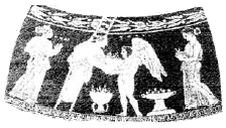
- 아도니스 원
- 아카데미 원
- 올림피아 원
- 파티오 원
(정답률: 78%)
18. 중국 소주(蘇州)지방의 명원과 관련하여 작정자와 특징이 올바르게 연결된 것은?
- 창랑정 - 왕헌신 - 방형연못과 구룡지 등이 어우러진 수경관
- 졸정원 - 소순흠 - 좁다란 원로와 축산으로 어우러진 산악경관
- 사자림 - 중봉화상 - 심원감과 대비, 밝은 수경관
- 유원 - 서태시 - 허와 실, 명과 암의 유기적 산수경관
(정답률: 59%)
19. 다음 그림은 일본의 유명한 평정고산수 정원이다. 이와 같은 석조방식으로 정원을 꾸민 곳은?
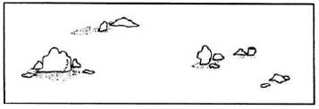
- 용안사
- 대덕사
- 은각사
- 금각사
(정답률: 47%)
20. 중국 송(宋)나라 시대에 악명 높았던 화석강(化石綱)의 설명과 관련이 없는 내용은?
- 수산의 간악(艮嶽)을 건립
- 휘종과 주면
- 화청궁과 천축석
- 꽃나무와 태호석을 운반하는 배의 행렬
(정답률: 30%)
2과목: 조경계획
21. 스타이니츠(Steinitz)는 도시환경에서의 형태와 행위 사이의 일치성을 3가지 유형으로 분류 하였다. 다음 중 거리가 먼 것은?
- 영향의 일치성
- 밀도의 일치성
- 타입의 일치성
- 강도의 일치성
(정답률: 55%)
22. 다음 중 공원 이용률에 의한 전체 공원의 면적수요를 산출시 관계 요소로 거리가 먼 것은?
- 공원이용자 전체의 활동면적
- 공원유형별 이용자 수
- 공원유형별 이용율
- 유효면적률
(정답률: 71%)
23. 어느 주택 단지의 규모가 200000m2이고, 주거용 건축의 바닥 면적이 40000m2, 평균 층수가 8층 일 때 주택단지의 용적률은?
- 120 %
- 140 %
- 160 %
- 250 %
(정답률: 77%)
24. 건축법상 원칙적으로 대지에 건축을 하는 건축주가 용도지역 및 규모에 따라 식수 등 조경에 필요한 조치를 하여야할 법정대지 면적은?
- 150 제곱미터 이상
- 200 제곱미터 이상
- 250 제곱미터 이상
- 300 제곱미터 이상
(정답률: 59%)
25. 다음 지질도에서 45 가 의미하는 것은?
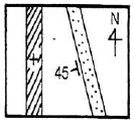
- 수평면에 대한 경사각이 45° 이다.
- 북쪽에서 서쪽으로 45m 길이로 기울어졌다.
- 암석 폭이 45m 이다.
- 암석의 깊이가 45m 이다.
(정답률: 62%)
26. 주민들의 태도를 조사하기 위한 방법의 하나로서 리커트 척도가 이용된다. 이 때 특정 사항에 동의하고 부도의하는 정도를 보통 몇 단계로 구분하는가?
- 3 단계
- 7 단계
- 11 단계
- 15 단계
(정답률: 85%)
27. 도시공원 및 녹지 등에 관한 법률에서 도시자연공원 구역안의 행위허가의 세부기준으로 틀린 것은?
- 건폐율은 100 분의 20 이내로 한다.
- 용적률은 100 퍼센트 이내로 한다.
- 높이는 최대 16 미터, 4층 이하로 하고, 주변 미관과 조화를 이루어야 한다.
- 건축물 또는 공작물 중 기반시설로서 건축 연면적이 1천500제곱미터 이상은 도시계획시설로 설치하여야 한다.
(정답률: 39%)
28. 다음 중 도시 안에서 보행인에게 물품이나 정보의 교환 기능이 가장 강한 광장은?
- 가로계광장(街路系 廣場)
- 프라자계광장(Plaza系 廣場)
- 중정계광장(Agora系 廣場)
- 공지적광장(空地的 廣場)
(정답률: 47%)
29. 다음 공장조경 계획 수립시 유의하여야 할 사항으로 적합하지 않은 것은?
- 공장 외부 녹지대는 낙엽교목을 열식하여 여름에만 녹음지대를 형성토록 한다.
- 휴식지역은 공장 주변부에 소규모로 분산 배치한다.
- 넓은 잔디밭과 화단을 충분히 확보하여 초화류를 식재 한다.
- 주거지역과 인접한 공업단지는 30m 이상의 차단 녹지대를 조성토록 한다.
(정답률: 39%)
30. 우리나라의 환경.교통.재해 등에 관한 영향평가벙에서 대상사업을 시행하고자 할 때 영향평가에 관한 평가서의 원칙적인 작성자는?
- 평가대상의 사업자
- 환경부장관
- 지방환경관리청장
- 건설교통부장관
(정답률: 50%)
31. 지구공원의 개설로 얻을 수 있는 효과가 아닌 것은?
- 지구 수준에서의 노지 거점으로 도시의 경관을 조성하고 생활 환경을 개선 시킬 수 있다.
- 동사무소나 공회당을 부설시키면 지구중심으로써 지구민의 편익과 친목을 도모하여 연대의식을 함양 시킬 수 있다.
- 스포츠를 통하여 청소년을 건전한 방향으로 유도시켜 탈선 및 범죄의 감소를 가져올 수 있다.
- 자원지향적(resource oriented) 공원이므로 고급화된 도시민의 여가 욕구를 충족시킬 수 있다.
(정답률: 65%)
32. C.A.Perry의 근린주구(neighbourhood unit) 이론의 설명 중 적절치 않은 것은?
- 기본규모는 1개 초등학교를 유지시킬 수 있는 거주지역 이다.
- 근린주구 중심과 각 가정과의 최대 거리는 1.2km 정도 이다.
- 근린주구 내부의 도로는 통과 교통이 배제된다.
- 간선도로.녹지 등에 의해 다른 지역과 구별하였다.
(정답률: 55%)
33. 우리나라의 건축법상 사업주체가 건설ㆍ공급할 수 있는 단독주택지(1호당) 규모의 기준으로 옳은 것은?
- 70m2 이하
- 110m2 이하
- 330m2 이하
- 500m2 이하
(정답률: 38%)
34. 레크리에이션 대상지의 수요를 크게 좌우하는 3 요인은 이요자들의 변수, 대상지 자체의 변수, 접급성의 변수 이다. 다음 중 접근성의 변수에 해당되지 않는 것은?
- 여행시간, 거리
- 준비 비용
- 정보
- 여가습관
(정답률: 48%)
35. 자연공원법에서 자연공원 지정기중의 설명으로 틀린 것은?
- 자연생태계 - 자연생태계의 보전상태가 양호하거나 멸종 위기 야생동물이 서식할 것
- 자연경관 - 자연경관의 보전상태가 양호하여 훼손 또는 오염이 적으며 경관이 수려할 것
- 지형보존 - 각종 산업개발로 경관이 파괴될 우려가 있을 것
- 문화경관 - 문화재 또는 역사적 유물이 있으며, 자연경관과 조화되어 보전의 가치가 있을 것
(정답률: 50%)
36. 주택의 배치 시 쿨데삭(cul-de-sac) 도로에 의해 나타나는 특징이 아닌 것은?
- 주택이 마당과 같은 공간을 두러싸는 형태로 배치된다.
- 통과교통이 출입하지 않으므로 안정하고 조용한 분위기를 만들 수 있다.
- 주민들 간의 사회적인 친밀성을 높일 수 있다.
- 도로를 따라 주택이 양쪽으로 나란히 배치되는 형태를 일컫는다
(정답률: 58%)
37. M. Laurie가 주장한 조경가의 단계별 3가지 역할이 아닌 것은?
- 조경계획 및 평가 - 대규모 토지의 체계적 평가와 그 용도상의 적합도를 분석하는 행위
- 도로경관 계획 - 국토의 균형 있는 발전을 위해 보존 및 개발지를 선택하는 등 형성 될 도로 주변의 도로선형 결정에 참여하는 행위
- 단지계획 - 여러 자연요소와 시설물들을 기능적 관계나 대지 특성에 맞춰 배치하는 행위
- 조경설계 - 구성요소.재료를 선정하여 시송을 위한 세부적 설계로 발전시키는 행위
(정답률: 40%)
38. 생태적 결정론에 대한 설명으로 잘못된 것은?
- 생태적 계획의 이론적 뒷받침으로서 미국의 lanmcHarg교수가 주장한 것이다.
- 환경계획을 자연과학적 근거에서 인간의 환경적응 문제를 파악하고자 하였다.
- 자연과 인간, 자연과학적 인간환경의 관계를 생태적 질서를 통하여 규명하고자 하였다.
- 자연의 경제적 가치를 중요시하고 이를 극복해야 할 대상으로 파악하고자 하였다.
(정답률: 67%)
39. 다음 중 자연공원법에서 정하는 자연공원에 속하지 않는 것은?
- 국립공원
- 도립공원
- 묘지공원
- 군립공원
(정답률: 63%)
40. 다음 중 관광개발로 인한 부정적인 측면을 서술한 것 중 틀린 것은?
- 상수도와 하수도시설과 같은 도시 하부구조에 대한 비용이 증가
- 연중(年中) 고용의 안정적 증가
- 기존 지역문화의 와해
- 범죄 및 반달리즘(Vsndal ism)의 증가
(정답률: 60%)
3과목: 조경설계
41. A1, A2 등으로 표현되는 제도용지에 대한 설명 중 틀린 것은?
- 번호가 커질수록 용지의 크기도 크다
- 세로와 가로의 비는 1 : √2 이다
- A0의 넓이는 약 1m2 정도이다
- 큰 도면을 접을 때에는 A4의 크기로 접는다
(정답률: 69%)
42. 다음의 경관론 중에서 관찰자의 시점과 대상의 관계에 의해 경관을 파악, 해석하고자 하는 이론은?
- 문화경관론
- 공간구성론
- 시각구성론
- 매체전달론
(정답률: 60%)
43. 시각적 선호(Visual preference)를 결정하는 변수가 아닌 것은?
- 생태적 변수
- 물리적 변수
- 상징적 변수
- 개인적 변수
(정답률: 30%)
44. 다음 중 좌우대칭(Symmetry)의 특징이 아닌 것은?
- 개방, 노출
- 균형, 통일
- 권위, 안정
- 계획의 명료성
(정답률: 72%)
45. 조화로운 단계에 의하여 일정한 질서를 가진 자연적인 순서의 계열로서 기본적인 일련의 유사를 무엇이라 하는가?
- 대비(contrast)
- 균제(symmetry)
- 점증(gradation)
- 균형(balance)
(정답률: 36%)
46. 다음 중 계단의 설계 설명으로 틀린 것은?
- 계단의 발판폭(tread)과 계단높이(rise)의 관계는 T + 2R = 60 ~ 63 cm 정도가 되도록 한다.
- 계단참의 폭은 1.2m 이상이어야 한다.
- 계단참은 5 ~ 6m 높이마다 설치하는 것이 좋다.
- 옥외에 설치하는 계단은 최소 2단 이상을 설치하여야 한다.
(정답률: 67%)
47. 형태심리학자인 베르타이머(Wer the imer)의 도형 조직원리에 해당되지 않는 것은?
- 근접성
- 분리성
- 유사성
- 대칭성
(정답률: 60%)
48. 리튼(Litton)은 경관 유형별 시각적 훼손 가능성과 더불어 훼손 가능성과 관련된 일반적인 원칙을 제시한 바 있다. 리튼이 제시한 일반적인 원칙에 어긋나는 내용은?
- 완경사보다는 급경사 지역이 훼손 가능성이 높다.
- 스카이라인, 능선 등과 같은 모서리 혹은 경계 부분이 시각적 훼손 가능성이 높다.
- 단순림보다 혼효림이 시각적 훼손 가능성이 높다.
- 어두운 곳보다 밝은 곳이 시각적 훼손 가능성이 높다.
(정답률: 54%)
49. 다음 중 입면도(elevation)에 해당되지 않는 것은?
- 단면도
- 정면도
- 측면도
- 배면도
(정답률: 알수없음)
50. 조경에 사용되는 의자(벤치) 설계시 유의사항 중 틀린 것은?
- 의자의 크기에 따라 1인용, 2인용, 3인용으로 구분한다.
- 체류시간을 고려하여 설계하며, 긴 휴식에 이용되는 의자는 앉음 판의 높이가 낮고 등받이를 길게 설계한다.
- 등받이 각도는 수평면을 기준으로 95 ~ 110°를 기준으로 하고, 휴식시간이 길어질수록 등받이 각도를 크게 한다.
- 발 닿는 부분은 잔디 드으로 식재하는 것이 좋다.
(정답률: 62%)
51. 다음 옥외 조명 체계에 관한 설명중 틀린 것은?
- 도로의 보행자에 대한 조명기구의 간격은 원칙적으로 설치 높이의 7배 이하의 거리로 한다.
- 잔디등의 높이는 1.0m 이하로 설계한다.
- 야경의 중심이 되는 대상물의 정원등 조명은 주위보다 몇 배 높은 조도기준을 적용하여 중심감을 부여한다.
- 투광등의 투광기는 밀폐형으로 하여 방수성을 확보한다.
(정답률: 28%)
52. 공원, 유원지, 주택단지 등의 놀이공간 및 놀이터의 구성에 관한 설명 중 틀린 것은?
- 어린이의 이용에 편리하고, 햇볕이 잘 드는 곳 등에 배치한다.
- 이용자의 놀이 특성을 고려하여 어린이놀이터와 유아놀이터는 주변에 연계 서리하여 함께 이용토록 한다.
- 놀이터와 도로.주차장 기타 인접 시설물과의 사이에는 폭 2m 이상의 녹지공간을 배치한다.
- 놀이시설 자체의 설치공간과 놀이시설의 이용공간 그리고 각 이용공간 사이의 완충공간을 배려한다.
(정답률: 65%)
53. 린치(Lynch)가 주장한 도시 이미지 형성요소에 해당하지 않는 것은?
- paths
- edges
- view point
- landmarks
(정답률: 56%)
54. 다음 중 시설물 배치계획에 포함되지 않는 것은?
- 시설물 평면계획
- 시설물 형태 및 색채계획
- 시설물 재료계획
- 시설물 하부구조계획
(정답률: 25%)
55. 투시도에 관한 다음 설명 중 맞는 것은?
- 투시도를 그릴 때 시정의 높이는 항상 지면의 높이로 설정된다.
- 시점이 대상물에 너무 근접하면 비뚤어지고 너무 멀어지면 입체감이 떨어진다.
- 투시도란 도법에 맞은 표현이 핵심이므로 세세한 부분까지 정확한 작도법을 준수하여 그려야 한다.
- 투시도의 종류에는 1점 투시도, 2점 투시도, 3점 투시도가 있으며 각각 인테리어, 건축, 기계 등 전문 분야별로 특수하게 사용되는 것을 일컫는다.
(정답률: 22%)
56. 자연공원 내 표지시설 설계시 유의사항으로 거리가 먼 것은?
- 표시된 내용이 이해하기 쉬울 것
- 문자나 그림을 조각해서 넣을 것
- 이용자의 신체적 조건을 고려해서 설치할 것
- 재료는 주로 철재를 사용할 것
(정답률: 63%)
57. 다음 중 알베도(Albedo) 값이 가장 작은 것은?
- 수면
- 잔디면
- 모래
- 콘크리트
(정답률: 38%)
58. 다음 그림 중 석재(石材)의 단면 표기로 맞는 것은?
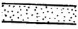
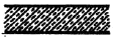
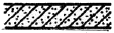
(정답률: 34%)
59. 먼셀 표색계(Munsell color system)에서 “5R 7/10”에 대한 설명 중 옳은 것은?
- 명도는 5번째 적색으로 적색의 대표색을 가리키며 채도 7 , 색상 10 의 색을 지칭
- 색상은 5번째 적색으로 적색의 대표색을 가리키며 명도 7 , 채도 10 의 색을 지칭
- 채도는 5번째 적색으로 적색의 대표색을 가리키며 명도 7 , 색상 10 의 색을 지칭
- 색상은 5번째 적색으로 적색의 대표색을 가리키며 채도 7 , 명도 10 의 색을 지칭
(정답률: 59%)
60. 다음 중 경관분석방법의 일반적 요건에 해당되지 않는 것은?
- 예민성
- 실용성
- 선호성
- 비교가능성
(정답률: 43%)
4과목: 조경식재
61. 잔디의 생육시 견딜 수 있는 염분의 농도 한계로 가장 적합한 것은?
- 0.01%
- 0.1%
- 0.5%
- 1%
(정답률: 45%)
62. 식재지 토양의 일정용량 중 토양입자, 유기물, 수분, 공기의 이상적 용적 구성비는?
- 토양입자 40%, 유기물 10%, 수분 30%, 공기 20%
- 토양입자 50%, 유기물 10%, 수분 25%, 공기 15%
- 토양입자 45%, 유기물 5%, 수분 25%, 공기 25%
- 토양입자 40%, 유기물 5%, 수분 30%, 공기 25%
(정답률: 70%)
63. 다음은 토목공사시 주의해야 할 사항들인데 특히 식재를 위해 가자 필요한 것은?
- 절토와 성토시에 토량(土量)을 균형되게 하도록 한다.
- 배수시설의 위치를 정확히 파악하도록 한다.
- 표토(表土)는 반드시 한곳에 모아둔다.
- 주변지역의 표고(表高)와 균형이 이루어지도록 한다.
(정답률: 60%)
64. 다음 사항에 해당하는 것은?
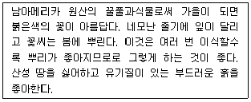
- 카네이션
- 백일홍
- 샐비어
- 피리꽃
(정답률: 62%)
65. 다음 수목 중 이식시 뿌리분을 만들지 않거나, 이식하기 쉬운 수종으로만 짝지어진 것은?
- Salix babylonica, Firmians simplex
- Picea jezoensis, Pinus densiflora
- Larix kaempferi, Betula platyphylla
- Taxus cuspidata, Juglans sinensis
(정답률: 32%)
66. 생태계의 개체군 분포에서 Allee의 원리가 뜻하는 것은?
- 어떤 개체군 분포는 집단화가 유리하다.
- 어떤 개체군은 불규칙적으로 분포한다.
- 어떤 개체군은 개체 내 경쟁이 개체간보다 치열하다.
- 어떤 개체군은 미환경의 특성에 따라 분포한다.
(정답률: 56%)
67. Campsis grandiflora Schum 식물에 대한 특성으로 틀린 것은?
- 낙엽활엽의 덩굴성이다.
- 7 ~ 8월경 부터 적황색의 꽃이 핀다.
- 기근 없이 다른 물체에도 부착된다.
- 갈고리모양의 수술에는 독이 있어 눈에 들어가면 위험하다.
(정답률: 34%)
68. 인위적으로 법면(法面)을 피복한 후 2차 식생으로 들어오는 식물 중 잘못된 것은?
- 칡
- 돌나물
- 싸리류
- 억새
(정답률: 28%)
69. 한 곳에서 잎이 3개씩 모여 나고, 잎의 길이는 7 ~ 14cm 정도이며 딱딱하고 비틀리는 것으로 사방조림용으로 많이 이용되는 수종으로 가장 적합한 것은?
- Pinus strobus L.
- Pinus rigida Mill.
- Pinus koraiensis S. et Z.
- Pinus banksiana Lam.
(정답률: 54%)
70. 아황산가스(SO2) 농도가 0.01 ppm 이 되면 피해가 나타나기 때문에 지표종으로 사용하기에 적당한 식물은?
- 식나무
- 미국자리공
- 참억새
- 이끼류
(정답률: 32%)
71. 다음 중 원산지가 우리나라가 아닌 수종은?
- 아왜나무
- 영산홍
- 철쭉
- 회양목
(정답률: 32%)
72. 주위의 사물과 형태, 색채 및 질감에 있어서 현저한 차가 생겨나지 않도록 함으로써 일체화를 도모하는 식재기법으로 법면이나 벽면녹화와 같은 기능식재는?
- 쿠션식재
- 차폐식재
- 지표식재
- 카무플라즈
(정답률: 58%)
73. 100년 된 서어나무를 통해 얻을 수 있는 효과로 가장 약한 것은?
- 미기후 조절
- 소동물 서식처
- 소음 조절
- 공기 정화
(정답률: 34%)
74. 이식을 위한 수목의 굴취시 근원지경이 15cm인 상록수의 표준적인 뿌리분의 크기(직경)는?
- 64 cm
- 72 cm
- 84 cm
- 92 cm
(정답률: 44%)
75. 우리나라 녹지 자연도 등급의 설명이 틀린 것은?
- 시가지, 조성지 : 1 등급
- 경작지 : 2 등급
- 조림지 : 6 등급
- 자연림 : 8 등급
(정답률: 27%)
76. 작은 화단 가운데는 키가 큰 종류의 화초를 심고 가장자리에는 키가 차차 작은 화초를 심어서 사방에서 바라볼 수 있게 식재한 화단은?
- 경재화단
- 기식화단
- 카펫화단
- 용기화단
(정답률: 54%)
77. 이식수목의 지주설치 내용으로 틀린 것은?
- 매몰형 지주는 경관상 매우 중요한 곳이나 지주목이 통행에 지장을 많이 가져오는 곳에 설치한다.
- 거목이나 경관적 가치가 특히 요구되는 곳, 주간 결박 지점의 높이가 수고의 2/3가 되는 곳에 당김줄형을 사용한다.
- 삼발이(버팀형)는 견고한 지지를 필요로 하는 수목이나 근원지경 40cm 이상의 수목에 적용한다.
- 수고 1.2m 미만의 수목은 특별히 지주가 필요 항 때 단각형을 설치한다.
(정답률: 48%)
78. 다음은 옥상조경에서 쓰이는 식재 층의 경량재이다. 경량재 중 배수층에 쓰이지 않는 것은?
- 화산자갈
- 화산모래
- 석탄재
- 버미큘라이트
(정답률: 22%)
79. 다음중 봄부터 여름까지 나무의 개화기를 순서대로 바르게 나열한 것은?
- 오아벚나무 - 수국 - 자귀나무 - 이팝나무
- 산수유 - 모란 - 수국 - 일본목련
- 진달래 - 산딸나무 - 무궁화 - 백목련
- 개나리 - 수수꽃다리 - 모감주나무 - 배롱나무
(정답률: 53%)
80. 임해 매립지에 수풀을 조성하고자 한다. 식재 수관선으로 알맞은 포물선형은?
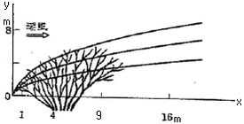
- y = √x
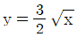
- y = 2√x
- y = 3√x
(정답률: 47%)
5과목: 조경시공구조학
81. 200m의 측선을 20m 줄자로 측정하여 1회 측정에서 +5mm의 누적오차와 ±25mm의 우연오차가 있었다면 정확한 거리는?(오류 신고가 접수된 문제입니다. 반드시 정답과 해설을 확인하시기 바랍니다.)
- 200.00 ± 0.075m
- 200.⑤ ± 0.⑤m
- 200.00 ± 0.⑤m
- 200.⑤ ± 0.075m
(정답률: 22%)
82. 굴삭, 운반 및 정지작업을 모두 할 수 있는 건설 기계는?
- 불도져
- 로우더
- 그레이더
- 스크레이퍼
(정답률: 67%)
83. 항공사진의 특수 3점에 해당되지 않는 것은?
- 주점(principal point)
- 연직점(nadir point)
- 등각점(isocenter)
- 부점(floating point)
(정답률: 43%)
84. 자동차의 주행에 영향을 미치는 도로의 기하구조와 물리적 형상을 결정하는 기준이 되는 속도는?
- 주행속도
- 구간속도
- 운전속도
- 설계속도
(정답률: 71%)
85. 다음 [보기]에서 ( )속에 알맞은 용어는?
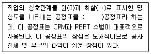
- 시스템
- 바챠트
- 횡선
- 네트워크
(정답률: 89%)
86. 살수되는 물이 전부 식물체에 공급되지 않으므로 이러한 손실을 고려한 살수효용성(irrigation efficiency)을 반영하여야 하는데, 일반적으로 상수도(上水道)에서 120L가 공급 된다고 했을 때 살수관개용으로 적용된 급수량은?
- 약 60L
- 약 75L
- 약 90L
- 약 120L
(정답률: 56%)
87. 다음 그림은 기둥의 지지상태를 나타낸 것이다. 기둥의 재질과 단면의 크기가 동일하다고 가정할 때 좌굴하중이 큰 순서대로 나열된 것은?(A:일단자유 타단고정, B:양단힌지, C:일단힌지 타단고정, D:양단고정)
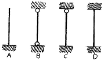
- A ＞ B ＞ C ＞ D
- D ＞ C ＞ B ＞ A
- B ＞ C ＞ D ＞ A
- C ＞ B ＞ D ＞ A
(정답률: 63%)
88. 담장의 붕괴 원인은 기초파괴와 전도인데 다음 중 기초 부동침하의 원인과 관계가 가장 먼 것은?
- 연약지반층
- 이질(異質)지반층
- 나무말뚝보강지반층
- 지하수위의 변동
(정답률: 48%)
89. 건설공사표준품셈레 규정하고 있는 공사현장내에서의 소운반 거리는?
- 수평거리 20m 이내의 운반거리
- 수평거리 50m 이내의 운반거리
- 수직고 20m 이내의 운반거리
- 수직고 10m 이내의 운반거리
(정답률: 75%)
90. 도로 설계시 길어깨(갓길, 路肩)에 대한 설명 중 틀린 것은?
- 도로의 주요 구조부의 보호를 위해 이용한다.
- 도로 표지 및 전주 등 노상시설을 설치한다.
- 고장차를 대피시키는 장소로 이용한다.
- 길어깨의 폭은 설계속도와 도로의 구분에 따라 결정 된다.
(정답률: 23%)
91. 다음 그림과 같은 보에서의 C점에서의 휨모멘트 값은? (C:6m 평보에서 4m지점에 집중하중 2t 이 수직으로 작용점)
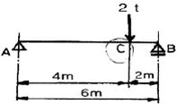
- 2 tㆍm
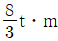
- 3 tㆍm
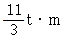
(정답률: 40%)
92. 유지관리 공사 품셈 작성시 교목성 수목의 수간보호는 수목의 무엇을 기준으로 하는가?
- 수목의 높이
- 수목의 수관폭
- 수목의 흉고직경
- 수목의 근원둘레
(정답률: 20%)
93. 잡철물 제작 설치에 대한 품셈기준 설명으로 틀린 것은?
- 설치용 장비가 필요한 경우에는 별도 계상한다.
- 기계기구손료는 재료비의 3%를 계상한다.
- 복잡한 구조물의 설치는 기본 품셈의 140% 를 계상 한다.
- 철물제작 설치에 있어서 비계매기 또는 장애물처리에 필요한 비계공은 필요한 때만 계상 한다.
(정답률: 46%)
94. 외응력에 대한 설명 중 틀린 것은?
- 연직교하중만 작용하는 보에는 휨모멘트와 전단력이 생긴다.
- 기둥에 축하중만 작용하는 경우에는 부재를 단순히 압축 또는 신장하려는 외응력인 축방향력이 생긴다.
- 축방향력이 인장력일 때 부(-)로 표시한다.
- 전단력은 일반적으로 연직교력에 의해서만 생기므로 전단력 계산에서는 부재에 작용하는 외력 중 모멘트 하중은 고려하지 않아도 된다.
(정답률: 50%)
95. 계획지반고 보다 3.0m 낮은 부지 500m2을 점질토로 성토하여 다지려 한다. 성토에 필요한 흙을 얼마만큼 절토하여야 하는지 원지반의 토량으로 산출하면 얼마인가? (L = 1.25, C = 0.8)
- 1875m3
- 1400m3
- 1200m3
- 1500m3
(정답률: 63%)
96. 다음 중 목재방부제에 해당하지 않는 것은?
- 크레오소트(creosote oil)
- PCP(Penta Chloro Phenol)
- 페인트(paint)
- 카본블랙(carbon black)
(정답률: 44%)
97. 기존형 벽돌을 사용하여 0.5B 의 두께로 길이 5m, 높이 2m의 담을 쌓으려 할 때 필요한 벽돌량(정미량)은?
- 약 415장
- 약 650장
- 약 750장
- 약 1299장
(정답률: 43%)
98. 침식되고 훼손된 등산로 복원 정비시 종단경사도에 따른 노면시설이 적합하지 않은 것은?
- 7%이하 경사는 흙바닥 정비
- 7 ~1 5% 경사는 마사토 시멘트 포장
- 15 ~ 25% 경사는 통나무 계단
- 25% 이상은 콘크리트 계단
(정답률: 42%)
99. 공정계획에서 건설공사의 작업소요시간 즉, 공정상의 기대 시간 D는 추정치를 통하여 산출되는데
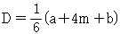
에서 m이 의미하는 것은?- 낙관시간
- 정상시간
- 비관시간
- 천재지변시간
(정답률: 43%)
100. 목재의 사용환경의 범주인 해저드클래스(Hazard class)에 대한 설명으로 틀린 것은?
- 땅과 물에 접하는 곳에서 높은 내구성을 요구할 때는 H4이다.
- 모두 10단계로 구성되어 있다.
- H1은 외기에 접하지 않는 실내의 건조한 곳에 해당 된다.
- 파고라 상부, 야외용 의자 등 야외용 목재시설은 H3 에 해당하는 방부처리방법을 사용한다.
(정답률: 70%)
6과목: 조경관리론
101. 기주(寄住)의 체내에서 병원체가 잠재하여 월동하는 병균은?
- 묘목의 입고병균
- 근두암종병균
- 잣나무 털녹병균
- 낙엽송 잎떨림병균
(정답률: 41%)
102. 다음 중 잔디 깍기의 목적이 아닌 것은?
- 잔디의 키를 짧게 하여 이용이 편리하게 한다.
- 정기적으로 깍아 줌으로 잡초를 제거한다.
- 잔디의 분얼(分蘖)을 촉진한다.
- 동토(凍土)를 방지한다.
(정답률: 69%)
103. 다음 중 유기인계 침투성 살충제에 속하지 않는 것은?
- 데메톤-에스=메틸유제(메타시스톡스)
- 포스파미돈액제(다무르)
- 메티타티온유제(수프라사이드)
- 메타락실수화제(리도밀)
(정답률: 38%)
104. 조경수목의 정지와 전정의 목적 및 효과가 아닌 것은?
- 나무수종 고유의 수형과 아름다움을 유지한다.
- 수관 내부로 햇빛과 바람이 골고루 통하게 되어 병해 발생이 촉진된다.
- 나무 가지의 생육을 고르게 한다.
- 나무의 크기를 조절 또는 축소시킬 수 있다.
(정답률: 42%)
1⑤. 원로와 광장을 점검할 때 조사해야 할 내용으로 틀린 것은?
- 비가 내린 후 물이 고인 곳은 없는가?
- 포장의 파손이 없는가?
- 측구에 물이 잘 흐르고 있는가?
- 이용자의 형태별 특성은 어떠한가?
(정답률: 69%)
106. 시설물의 목재방부를 위한 재료로 가장 적합한 것은?
- 에나멜 페인트
- 오일페인트
- 옻
- 크레오소트
(정답률: 23%)
107. 상록활엽수의 전정시기로 가장 적합한 시기는?
- 2 ~ 3월
- 4 ~ 5월
- 6 ~ 7월
- 8 ~ 9월
(정답률: 27%)
108. 난지형 잔디에 속하는 것은?
- 버뮤다그라스
- 켄터키블루그라스
- 크리핑벤트그라스
- 피인페스큐
(정답률: 84%)
109. 운영관리계획의 수립시에 있어서 질적, 양적 변화에 대한 설명으로 가장 거리가 먼 것은?
- 양적인 변화에서 생물인 경우에는 생장이나 번식으로 외형적 변화가 수반된다.
- 양적인 변화는 이용자 수와 이용 형태에 따라 크게 나타난다.
- 질의 변화는 이용자 취향, 관습, 사회, 경제적 변화에 따라 크게 나타난다.
- 질의 변화는 가시적이어서 쉽게 파악하고 대처 할 수 있다.
(정답률: 35%)
110. 다음 중 동해에 관한 설명으로 옳은 것은?
- 남쪽 경사면보다는 북쪽 경사면이 더 많이 발생한다.
- 과습한 토양보다는 건조한 토양에서 더 많이 발생한다.
- 오목한 지형에 있는 수목에서 동해가 더 많이 발생한다.
- 흐리고 바람이 많은 날 발생하기 쉽다.
(정답률: 38%)
111. 조경공간에서 관리하자에 의한 안전사고로 옳은 것은?
- 그네에서 뛰어내리는 곳에 벤치가 설치되어 있어 충돌한 사고
- 관객이 백 네트에 올라갔다가 떨어진 사고
- 유리조각을 방치하여 발을 베인 사고
- 시설물의 구조상 접속부에 손이 끼거나 구조 자체의 결함에 의한 사고
(정답률: 53%)
112. 다음 성형이 자유로운 합성수지의 종류 중 성격이 나머지와 다른 것은?
- 아크릴수지
- 우레탄수지
- 프란수지
- 멜라민수지
(정답률: 59%)
113. 옥외 레크리에이션의 관리 체계 중 서비스 관리체계 인자가 아닌 것은?
- 관리자의 목표
- 전문가적인 능력
- 이용자 태도
- 공중 안전
(정답률: 53%)
114. 다음 중 지하배수시설 유지관리로 부적합한 것은?
- 지하배수시설 도면은 별도로 만들어 놓는다.
- 지하배수시설은 유출구가 항상 점검의 대상이 된다.
- 재설치시는 기존 위치에 설치하는 것이 항상 경제적 이다.
- 배수 유출구는 항상 그 기능을 다하도록 주의 한다.
(정답률: 53%)
115. 공원관리비의 예산책정에 있어 작업 전체 비용이 30,000,000원 이고, 작업률이 3년에 1회일 때 단위연도의 예산은?
- 10,000,000 원
- 30,000,000 원
- 60,000,000 원
- 90,000,000 원
(정답률: 58%)
116. 레크리에이션 수용능력을 물리적, 생태적 및 심리적 수용능력으로 구분한 체계를 확립한 사람은?
- LaPage
- Aldredge
- Penfold
- Godschalk & Parker
(정답률: 59%)
117. 다음 중 최적 공기의 설명으로 가장 적합한 것은?
- 직접비에서 간접비를 뺀 공사비가 최소가 되는 공기
- 간접비에서 직접비를 뺀 공사비가 최소가 되는 공기
- 직접비와 간접비를 곱한 총공사비가 최소가 되는 공기
- 직접비와 간접비를 합한 총공사비가 최소가 되는 공기
(정답률: 70%)
118. 횡선식 공정표에 해당하는 것은?
- 간트(GANTT)차트
- 퍼트(PERT)
- 시피엠(CPM)
- 램프스(RAMPS)
(정답률: 74%)
119. 조경공간이 생태적으로 안정된 식생을 유지하는데 장애 요인이 아닌 것은?
- 자연지반 확보
- 야간조명
- 귀화식물의 증대
- 포장면과 건축물의 증가
(정답률: 65%)
120. "길이 불편하고 합리적으로 설계되어 잇지 못하므로 길이 아닌 잔디공간을 통행하는 것이 잘못된 것이라고 생각 들지 않는다" 는 의식을 가진 공원 이용자에 의해 발생하는 공원 훼손행위의 유형은?
- 무지에 의한 훼손 행위
- 모방심리에 의한 훼손 행위
- 책임 회피적 훼손 행위
- 환경 탓에 의한 훼손 행위
(정답률: 43%)